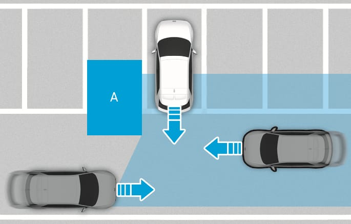
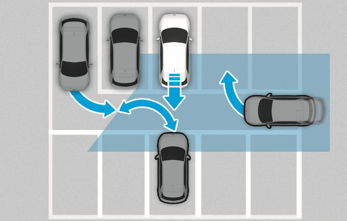
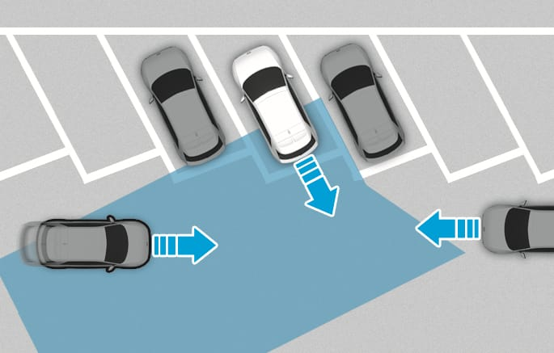
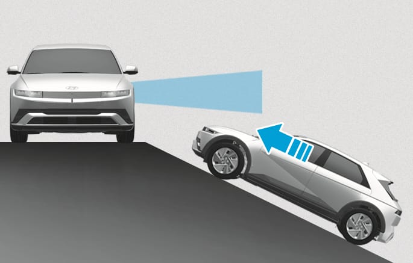
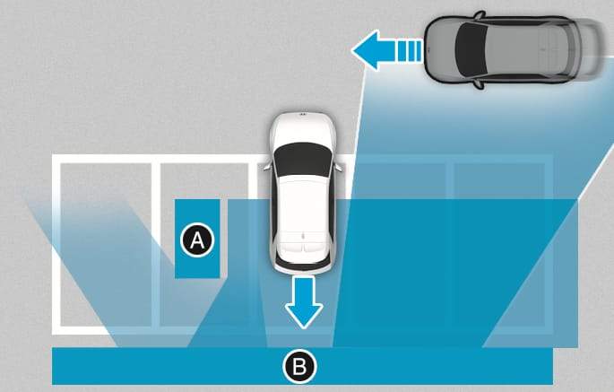
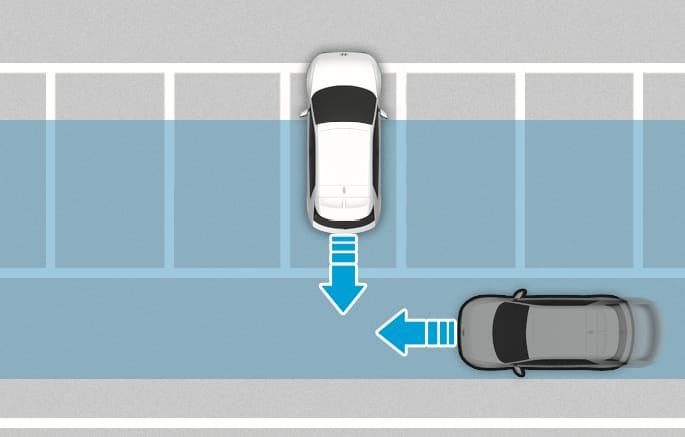

후방 교차 충돌방지 보조 이상 및 제한 사항
후방 교차 충돌방지 보조나 사이드 미러 경고등에 이상이 있거나 센서의 가림이 발생하면 클러스터에 경고문이 일정시간 표시되며 통합 (
-
경고 내용은 클러스터의 유틸리티 정보 뷰의 서비스 메시지에서 확인할 수 있습니다.
-
센서 앞에 이물질이나 트레일러, 캐리어 및 기타 장비가 있는 경우, 제거한 후 시동을 걸면 후방 교차 충돌방지 보조가 다시 정상적으로 작동합니다.
차량 후방 짐칸, 기타 장비 또는 이물질을 제거해도 후방 교차 충돌방지 보조가 정상적으로 작동하지 않으면 당사 직영 하이테크센터나 블루핸즈에서 점검을 받으십시오.
-
인식 센서 경고문이 표시되지 않거나 경고등이 켜지지 않더라도 후방 교차 충돌방지 보조가 정상적으로 작동하지 않을 수 있습니다.
-
시동을 건 직후에 인식 센서가 오염되었거나 차량 주변에 물체가 존재하지 않는 경우(막힘 없이 트인 장소 등) 후방 교차 충돌방지 보조가 정상적으로 작동하지 않을 수 있습니다.
짐칸 및 기타 장비를 사용할 때는 후방 교차 충돌방지 보조를 끄십시오. 후방 교차 충돌방지 보조를 사용하려면 짐칸 및 기타 장비를 제거하십시오.
후방 교차 충돌방지 보조는 다음의 센서를 사용합니다.
-
후측방 레이더
인식 센서에 관한 자세한 내용은 '인식 센서 및 제한 사항' 및 '후측방 충돌방지 보조 (BCA)'의 제한 사항을 참고하십시오.
다음과 같은 경우에는 후방 교차 충돌방지 보조가 정상적으로 작동하지 않을 수 있습니다. 주의하여 운전하십시오.
-
나무나 풀이 무성한 곳에서 출차하는 경우
-
노면이 젖은 도로에서 출차하는 경우
-
상대 차량이 빠르게 또는 느리게 접근하는 경우
다음과 같은 경우에는 제동 제어가 작동하지 않을 수 있습니다. 주의하여 운전하십시오.
-
도로의 요철, 구덩이, 이음매 등으로 인하여 차량이 심하게 흔들리는 경우
-
눈, 고인 물, 결빙 등으로 인하여 노면이 미끄러운 도로에서 출차하는 경우
-
타이어 공기압이 낮거나 타이어가 파손된 경우
-
브레이크를 튜닝한 경우
-
원격 스마트 주차 보조가 작동 중인 경우(사양 적용 시)
-
주변 차량이나 구조물이 있는 경우

2C_RCCADrivingNearVehicle
- 기둥
주변에 차량이나 구조물이 있으면 후측방에서 접근하는 차량을 인식하지 못해 후방 교차 충돌방지 보조가 경고하지 않거나 제동을 도와주지 않을 수 있습니다.
항상 주변 상황을 확인하고 주의하여 운전하십시오.
-
복잡한 주차 환경에서 출차하는 경우

2C_RCCAVehicleInParkingLot
주변에서 다른 차량(옆으로 빠져나가는 차량, 후측방 영역에서 주차 또는 출차하려는 차량, 회전하며 접근하는 차량 등)을 인식하면 후방 교차 충돌방지 보조가 작동하여 불필요하게 경고하거나 제동할 수 있습니다.
항상 주변 상황을 확인하고 주의하여 운전하십시오.
-
자차가 사선으로 출차하는 경우

2C_RCCAParkDiagonally
사선으로 주차된 상태에서 후진으로 출차할 경우 후측방에서 접근하는 차량을 인식하지 못해 후방 교차 충돌방지 보조가 경고하지 않거나 제동을 도와주지 않을 수 있습니다.
항상 주변 상황을 확인하고 주의하여 운전하십시오.
-
경사로나 경사로 근처에서 출차하는 경우

2C_RCCANearSlope
오르막길이나 내리막길, 또는 그 근처에서는 후측방에서 접근하는 차량을 인식하지 못해 후방 교차 충돌방지 보조가 경고하지 않거나 제동을 도와주지 않을 수 있습니다.
항상 주변 상황을 확인하고 주의하여 운전하십시오.
-
구조물이 있는 곳으로 주차하는 경우

2C_RCCAThereIsStructure
- 기둥
- 벽
후방이나 측면에 구조물이 있는 곳에서 후진 주차를 할 경우 전방에서 움직이는 차량을 인식하면 후방 교차 충돌방지 보조가 작동하여 불필요하게 경고하거나 제동할 수 있습니다.
항상 주변 상황을 확인하고 주의하여 운전하십시오.
-
자차가 후진 주차하는 경우

2C_RCCAParkRearward
후진 주차를 할 경우 주차 공간 후측방 영역에서 주행하는 차량을 인식하면 후방 교차 충돌방지 보조가 작동하여 불필요하게 경고하거나 제동할 수 있습니다.
항상 주변 상황을 확인하고 주의하여 운전하십시오.
-
다른 차량이나 트레일러를 견인할 때는 후방 교차 충돌방지 보조를 사용하지 마십시오. 제어 안전성이 떨어질 수 있습니다.
-
강한 전자파에 의해 후방 교차 충돌방지 보조가 순간적으로 해제될 수 있습니다.
-
시동 또는 후측방 레이더 초기화(재부팅 등) 시 약 3초 동안 기능이 작동하지 않을 수 있습니다.
-
가림 및 고장 상태에서 시동을 껐다 다시 걸면 가림 및 고장 상태가 유지되어 후방 교차 충돌방지 보조가 정상적으로 작동하지 않을 수 있습니다.